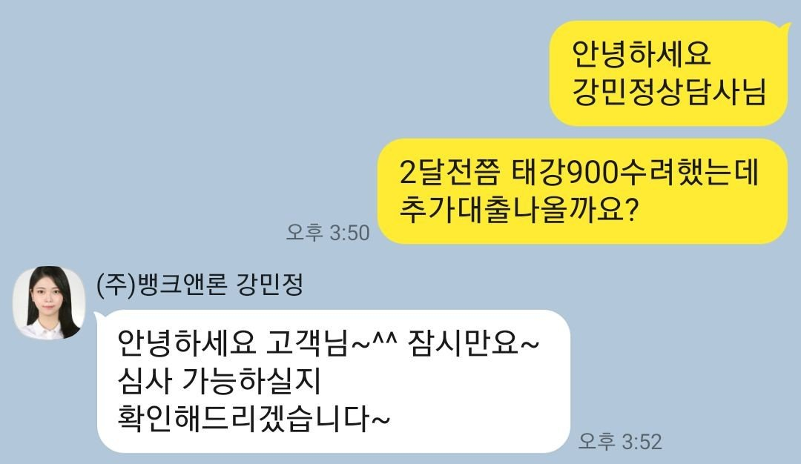
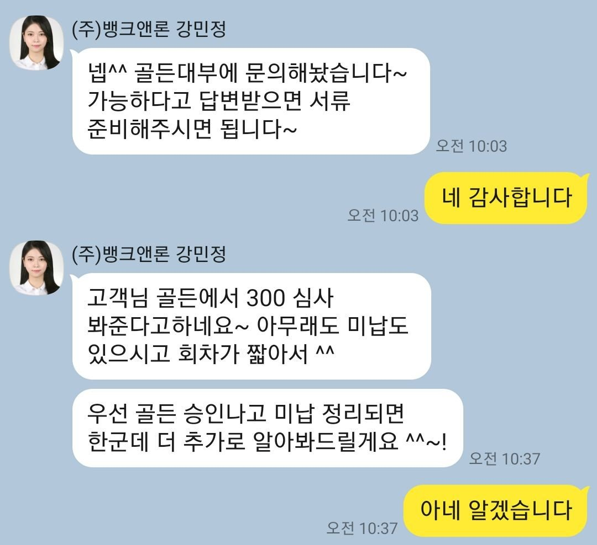
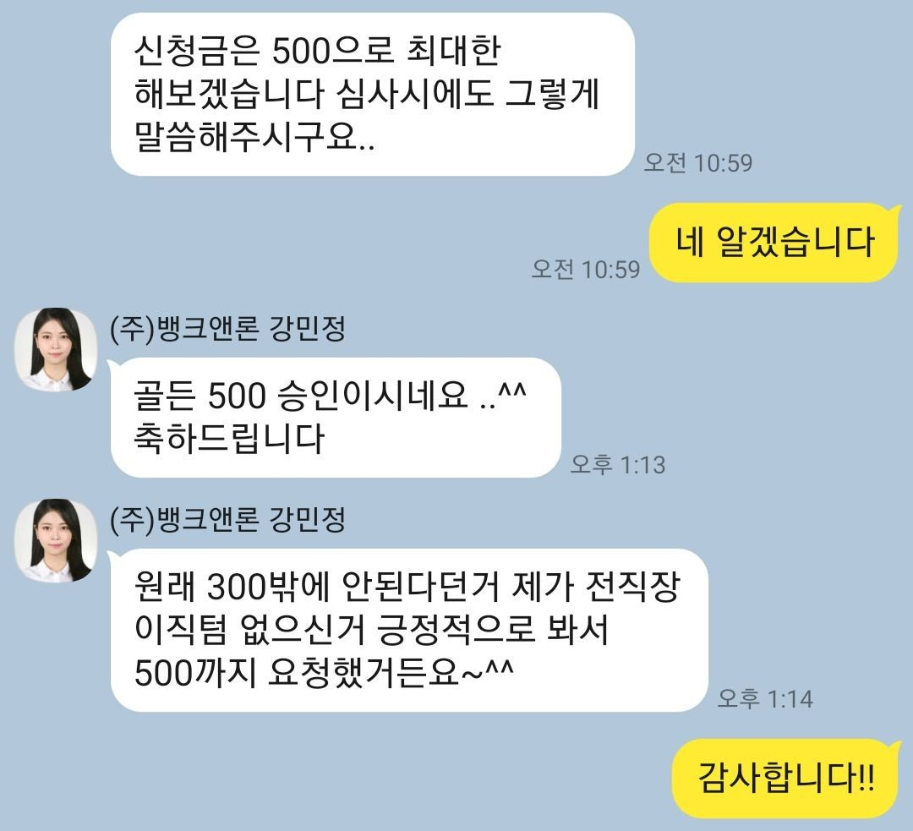

[개인회생자대출] 역시 강민정상당사님!!
재직형태 : 직장인
재직기간 : 4개월
4대보험가입 : 유
소득 : 연봉3000만원
신용점수 : 100점
채무내역 : 개인회생 재회생 9회차중 1회미납
기대부 2달전 태x 900 미납없음
이러한상황에 대출받은지 얼마안되고
미납도 있어서 힘들겠지라는 생각이많았지만
혹시나하고 강민정 상담사님께 추가자금 혹시될까
문의드렸더니!!역시!! 개인상황에 맞게 금융권추천해주셔서
서류부터 승인까지 한번에 빠르게~ㅅㅅㅅ
너무감사드리고 여유로운 명절을 보낼수있을것같습니다
다들 즐거운명절보내시고 계획대로 변제잘하다가 다시 문의드리겠습니다!!


